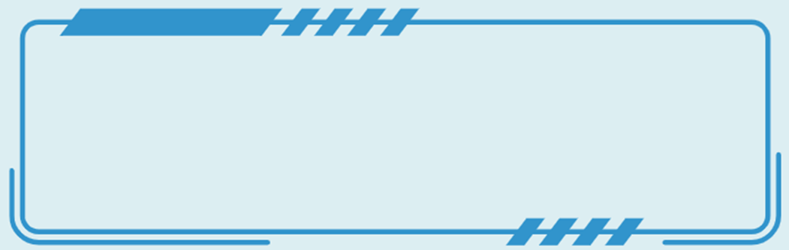
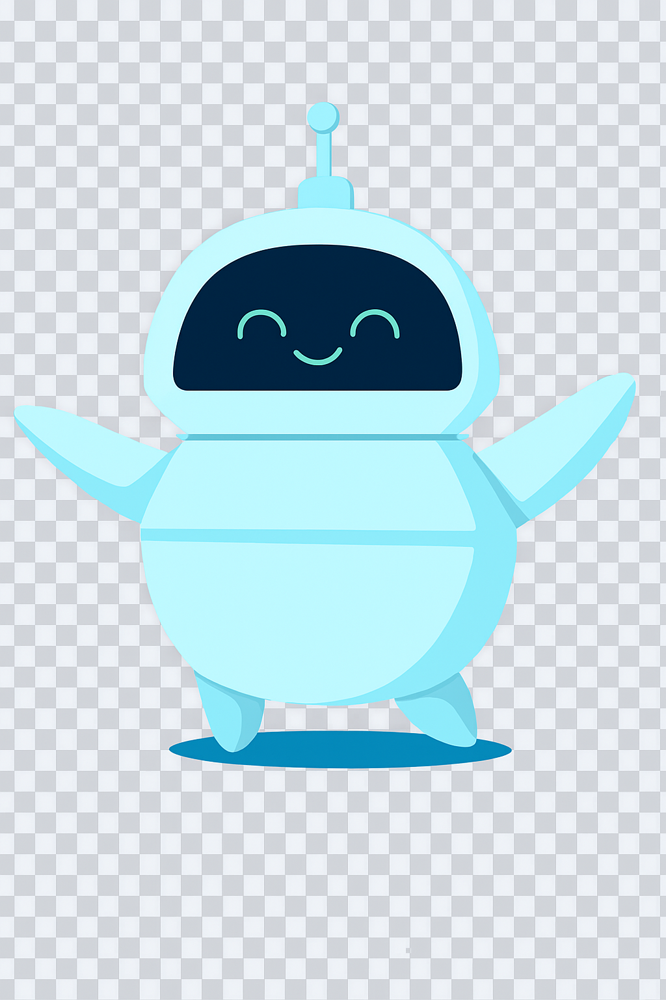

ISO (International Organization for Standardization) – Organización que publica normas internacionales como ISO 9001 e ISO/IEC 25010. CMMI Institute – Información sobre el modelo CMMI. IEEE Standards Association – Estándares para pruebas y documentación de software.
Herramientas de Calidad SonarQube – Análisis de calidad y seguridad del código. Jira – Gestión de proyectos y seguimiento de errores. Bugzilla – Seguimiento de defectos. TestLink – Gestión de pruebas.
Recursos de Aprendizaje Agile Alliance – Comunidad global sobre metodologías ágiles. Scrum.org – Información y certificaciones oficiales sobre Scrum. Atlassian Agile Coach – Guías sobre Scrum y Kanban.
